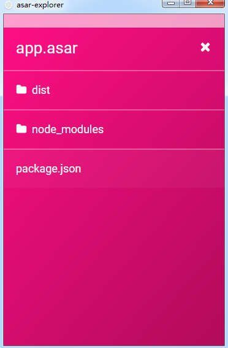

初探electron
Electron
Electron通过将Chromium和Node.js合并到同一个运行时环境中，并将其打包为Mac，Windows和Linux系统下的应用来实现这一目的。Electron和nwjs其实是一个作者，中间的种种可以访问参考2来查看，很有意思的一件事。
渲染进程和主进程
Electron 中，入口是一个 js 文件（和 NW.js 不同，入口是 html 文件），运行这个入口文件（通常会是 package.json 里的 main 脚本）的进程称作主进程，在主进程使用 BrowserWindow 模块可以创建并管理 web 页面，也就是应用的 GUI。
const {BrowserWindow} = require('electron')
// 主进程创建web页面
let someWindow = new BrowserWindow(winOpts)
// 加载本地的文件
someWindow.loadURL('file://' + __dirname + '/index.html')
在主进程创建的一个个web页面也都运行着自己的进程，即渲染进程，渲染进程各自独立，各自管理自己的页面，可以想象是浏览器一个个的 tab。
每个 BrowserWindow 实例都在自己的渲染进程里运行页面。 当一个 BrowserWindow 实例被销毁后，相应的渲染进程也会被终止。
进程间的通信
Web 页面因为安全限制，不能直接访问原生的GUI资源（比如dialog、电源监控，通知栏等），Electron 中也是一样，渲染进程如果想要进行原生的GUI操作，就必须和主进程通讯，请求相应的GUI操作。
Electron 提供了几种渲染进程和主进程通信的方式：
第一种是使用ipcMain和ipcRenderer模块
在渲染进程中使用ipcRender模块向主进程发送消息，主进程中ipcMain接收消息，进行操作，如果还需要反馈，则通知渲染进程，渲染进程根据接收的内容执行相应的操作：
// 渲染进程中
const {ipcRenderer} = require('electron')
ipcRender.send('somemsg', data);
ipcRender.on('replaymsg', (evt, otherData) => {
console.log(otherData)
})
// 主进程中
const {ipcMain} = require('electron')
ipcMain.on('somemsg', (evt, data) => {
console.log(data)
evt.sender.send('replymsg', otherData);
});
// 同时Electron 也提供了同步的方式
不过切忌用 ipc 传递大量的数据，会有很大的性能问题，严重会让你整个应用卡住。
第二种是直接在渲染进程使用remote模块
remote 模块可以直接获取主进程中的模块。这种方式其实是第一种方式的简化。
// 在渲染进程打开提示对话框
const {dialog} = require('electron').remote
dialog.showMessageBox({ opts });
第三种是主进程向渲染进程发送消息
this.webviewWindow.webContents.send('ping');
第四种是渲染进程之间的通信
最简单的方法是使用浏览器中已经实现的 HTML5 API。 其中比较好的方案是用 Storage API， localStorage，sessionStorage 或者 IndexedDB。
你还可以用 Electron 内的 IPC 机制实现。将数据存在主进程的某个全局变量中，然后在多个渲染进程中使用 remote 模块来访问它。
// 在主进程中
global.sharedObject = {
someProperty: 'default value'
}Copy
// 在第一个页面中
require('electron').remote.getGlobal('sharedObject').someProperty = 'new value'Copy
// 在第二个页面中
console.log(require('electron').remote.getGlobal('sharedObject').someProperty)
Electron + Vue
参考electron-vue，但是项目的Electron版本默认是2.x的版本，有点老，升级成了最新版（5.0.1），修改了一些配置，使其可以在高版本正常运行：electron-vue-demo。
但发现一个点，Electron将打包后的代码压缩加密为.asar文件，但是，这个加密文件是可以被解密的，开发electron-vue项目的同一个哥们，同时开源了一个可视化的解密工具：asar-explorer
但打包出来的包依旧有点大，打包后的文件中的node_modules 暂时还未找到合适方案合并到dist/electron/render.js中。
